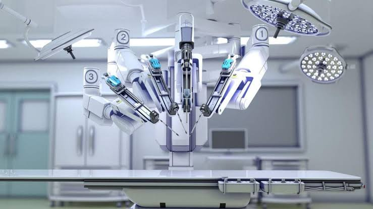
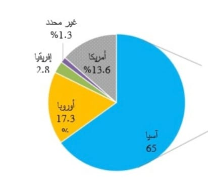

artificial intelligence role
links:
Do Precise Micro Operations By Robot
It represents the cooperation between human intelligence and artificial intelligence through the robot used in operating rooms, which can reach what the surgeon's hand cannot reach.

Diagnoses Of Illnesses
Diagnosis of diseases and the possibility of examining large numbers of patients in a short time and without effort
Management Of Work Within The Hospital
Managing work and organizing patient files after entering a set of huge data into computer systems, allowing access to information in a faster period of time
This picture shows the percentage of the world's use of artificial intelligence in the field of manufacturing
